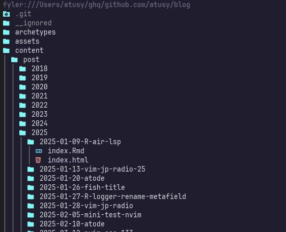

A7Lavinraj/fyler.nvimというファイラプラグインが出た。
これはツリー表示のファイラでありながら、stevearc/oil.nvimみたいにテキスト編集のノリでファイル操作をできるすぐれもの。

たとえば
ddでファイルを削除して$ciwtxt<esc>で拡張子をtxtに変更yyでコピーしてpで複製類似プラグインにstevearc/oil.nvimがあります。 eetanさんの記事がデモ動画つきでわかりやすいので、見てみてください。
Neovimでバッファみたいにファイル操作できるoil.nvimの使い方
https://eiji.page/blog/neovim-oil-intro/
oil.nvimはツリー表示ではなく、リスト表示でディレクトリを開くその中のファイルを一覧します。ツリー表示でない点もだが、foo.txtを../foo.txtに変更するようなディレクトリをまたいだ操作を不得手とすることもあり、個人的には馴染めませんでした。
これまでサイドバー型ツリー表示のnvim-neo-tree/neo-tree.nvimを使っていたものの、サイドバーじゃなくていいよ派の意見を確かめてみたかったこともあり、非サイドバー型ツリー表示のA7Lavinraj/fyler.nvimを試してみます。
ちなみに、サイドバーの必然性ないんですよとか、テキスト感覚なファイル操作が強力なんですよって話は以下の動画でryoppippiさんもしてます。
【外資ITエンジニアの開発環境】VimmerによるVimmer(になりたい人)のためのVim動画
私がサイドバー型ファイラを使っていた理由は、ふと気になったときにディレクトリ構造を確認できること、横幅の広いディスプレイのマージンとして機能すること、でした。しかし、ディレクトリ構造の確認はファイラをすぐ表示できれば問題ないでしょうし、マージンもファイラで埋める必要もないよなとはぼんやり思ってました。
挑戦しだして一日ですが、オレオレ設定てんこもりになった気がするので、紹介します。
通常はrequire("fyler").open()で起動する……のですが、こいつは本当に起動時向けです。ディレクトリ指定や開きかた（float winを使うとか）があれば、openでよさそうですが、現在windowに表示するような起動方法であればrequire("fyler").focus()がいいでしょう。
fylerを表示中のwindowがいれば、そのwindowに移動する機能つきです。
ただし、tabpageをまたいでwindow変更してしまうので、細かく挙動を指定したい場合は以下のような関数を作るとよいでしょう。
local function open()
-- Move to an existing fyler window if one exists
local wins = vim.api.nvim_tabpage_list_wins(0)
for _, win in ipairs(wins) do
local buf = vim.api.nvim_win_get_buf(win)
local nm = vim.api.nvim_buf_get_name(buf)
if vim.startswith(nm, "fyler://") then
vim.api.nvim_set_current_win(win)
return
end
end
-- Open the existing fyler buffer if one exists
local bufs = vim.api.nvim_list_bufs()
for _, buf in ipairs(bufs) do
local nm = vim.api.nvim_buf_get_name(buf)
if vim.startswith(nm, "fyler://") then
vim.api.nvim_win_set_buf(0, buf)
return
end
end
-- Otherwise, open a new fyler window
if vim.v.count > 0 then
require("fyler").close()
end
require("fyler").open()
end
vim.keymap.set("n", "S", open, { desc = "Open fyler" })ファイラのマッピングは悩みがちですが、せっかくサイドバーではないので、通常のバッファに寄せるようなマッピングを検討してみました。
gf
<c-w>gf
<c-w>sgfや<c-w>vgfでまかなえる<c-w>fは存在するが、vsplitして開くデフォルトマッピングがないので考えるのが面倒gx
zc
zM
<c-s>
:w<cr>相当）#
:e #で開けるところから着想yp
yr
なお、デフォルトマッピングはほとんど無効化しています。
よーし、fyler使ってくぞー！
設定していた時の発見の一つに、かつてnnoremap gy "+yするといいよと言っていたマッピングは実はnmap gy "+yの方が便利というものがあります。
gyでVimからクリップボードにヤンクする
https://blog.atusy.net/2024/03/11/vim-gy-as-gui-yank/
というのもこんな感じで、y始まりのバッファローカルなマッピングを作ったとき、nnoremap gy "+yだとgypした時にグローバルマッピングを優先してしまうのです。
vim.keymap.set("n", "yp", function() ... end, { buffer = true })nnoremapではなくnmapでremapを有効にしとけば、この心配がありません。
結果としてypだけでなくgypもローカルマッピングするような手間を省けました。